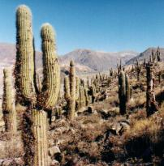
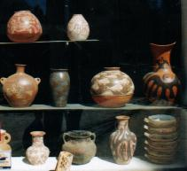

Sábado 29 a las 8:30 Tras el desayuno, salimos a recorrer el "Pucará de Tilcara", ubiado a varias cuadras del hotel. El Pucará es una gran loma, hoy poblada de gran cantidad de cardones, que fue utilizada como fortaleza en épocas precolombinas. Su ubicación es estratégica por encontrarse en la confluencia de dos grandes bajadas que llevan aguas al Río Grande. En la loma se han reconstruido algunas de las casas con paredes de piedra, y techadas con madera de cardón cubierta de adobe. El Pucará es una de las principales atracciones de Tilcara.  Al llegar al sitio turístico, visitamos primero el Jardín Botánico, que, a pesar de contar con muchos canteros vacíos, tenía una variada colección de cactus. Vimos un ejemplar de Tabaquillo, árbol de la zona que vive también en las alturas cordobesas, donde ha sido depredado. Es notable por que su corteza se descascara como piel de cebolla. Había diversas hierbas y arbustos, y nos divertimos golpeando la curiosa "Piedra Campana" que emite una afinada nota sonora.Luego recorrimos la lomada, prestando más atención a las aves y al paisaje que al aspecto arqueológico. A la salida concurrimos a las tiendas para elegir algunas artesanías. Estaba muy atraído por las tinajas, y conseguí una a muy buen precio. Ya volviendo a la ciudad, sobre el puente adquirí a unas niñas locales un pequeño fragmento de roca con un antiquísimo y minúsculo fósil de Trilobyte.  De vuelta al hotel comenzamos a empacar las cosas. Salimos a caminar por las somnolientas calles de Tilcara en busca de un lugar para nuestro último almuerzo. Despues volvimos al hotel y, antes de lo imaginado, ya estábamos instalados en el asiento del micro. Había comenzado la vuelta...Pero no era el final de las observaciones, por que nos detendríamos un par de veces por el camino. Primero en Purmamarca, donde realicé velozmente una acuarela y tomé una serie de fotos concatenadas de las montañas tan coloridas, esperanzado que con ellas podría reconstruir un panorama. Más al sur, casi llegando a la Ciudad de Jujuy, las laderas de las montañas comenzaban a presentar vegetación más tupida, casi selva. Nos detuvimos nuevamente a orillas del río Yala, que bajaba de densos bosques, para buscar un elusivo pajarito: el Mirlo de Agua. No apareció, pero la caminata a lo largo del río y entre las piedras resultó muy placentera. Pero sobre todo por lo emotiva: la luz del día ya se iba, y llegaba el momento en que tendríamos que despedirnos forzosamente del noroeste argentino: sus paisajes, sus aves, sus ríos, sus selvas. No había forma de evitar la vuelta. De repente se me ocurrió una idea: no abordaría el micro.
Me quedaría aquí, sentado indefinidamente sobre las piedras
al borde del río... Cenamos, dormimos y desayunamos. Amaneció con una fuerte neblina, y observamos más de un accidente, seguramente causado por este problema, y fuimos obligados a desviar a otra ruta más al sur. Finalmente estábamos en la autopista Panamericana. Almorzamos de nuevo en San Nicolás, donde había tropezado hacía una semana. Y pronto estábamos sorteando el tráfico en el acceso final a Buenos Aires. Un viaje de descubrimiento había llegado a su fin. A las 5 de la tarde del Domingo el remise nos dejó en la puerta de casa. Y comenzamos a rememorar vivencias. ¿Volveré alguna vez a estos parajes? |